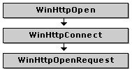

Microsoft Windows HTTP Services (WinHTTP) uses handles to keep track of settings and information required when using the HTTP protocol. Each handle maintains information pertinent to an HTTP session, a connection with an HTTP server, or a specific resource. This topic describes the various types of handles, the naming conventions for these handles, and their hierarchical structure.
The handles that are created and used by WinHTTP are called HINTERNET handles. The WinHTTP functions return HINTERNET handles that are not interchangeable with other handles, so they cannot be used with functions such as ReadFile or CloseHandle. Similarly, other handles cannot be used with WinHTTP functions. For example, a handle returned by CreateFile cannot be passed to WinHttpReadData. These HINTERNET handles cannot be closed while an API call using the handle is in progress. To avoid a race condition, applications should protect the handle and prevent it from being closed for as long as the API call is in progress.
Microsoft Win32 Internet (WinInet) functions also use HINTERNET handles. However, the handles used in WinInet functions cannot be interchanged with the handles used in WinHTTP functions. For more information about WinInet, see About WinINet.
The WinHttpCloseHandle function closes WinHTTP HINTERNET handles.
Throughout the WinHTTP documentation, descriptions of functions in the application programming interface (API) and sample code show the creation and use of various types of HINTERNET handles. To keep track of the different types of handles available, the naming of these handles is consistent. The following table shows the identifiers used by convention in the documentation.
| Handle type | Function creating handle | Identifier |
|---|---|---|
| Generic handle | WinHttpOpen, WinHttpConnect, or WinHttpOpenRequest | hInternet |
| Session handle | WinHttpOpen | hSession |
| Connection handle | WinHttpConnect | hConnect |
| Request handle | WinHttpOpenRequest | hRequest |
| Web Socket handle | WinHttpWebSocketCompleteUpgrade | hWebSocket |
The HINTERNET handles are maintained in a hierarchy. The handle returned by WinHttpOpen is the session HINTERNET handle. Calling WinHttpOpen initializes the WinHTTP functions and begins a session context that maintains user information and settings throughout the life of the session handle. WinHttpConnect specifies a target HTTP or HTTPS server and creates a connection HINTERNET handle. By default, the connection handle inherits the settings for the session handle. Each resource specified with a call to WinHttpOpenRequest is assigned a request HINTERNET handle.
The following diagram illustrates the hierarchy of HINTERNET handles. Each box in the diagram represents a WinHTTP function that returns an HINTERNET handle.

After closing a handle, the application must be prepared to receive callback notifications on the handle until the final WINHTTP_CALLBACK_STATUS_HANDLE_CLOSED value is returned to indicate that the handle is completely closed (or until the application does its own equivalent synchronization, such as tracking and waiting for any callbacks from pending asynchronous operations and ensuring no further operations are attempted using that handle).
A session handle is termed the parent of any connection handle it used to create; likewise, both the connection handle and its parent session handle are termed parents of any request handle that the connection handle is used to create.
When a parent handle is closed, any children it has are indirectly invalidated even if not closed themselves, and subsequent requests using them fail with the error ERROR_INVALID_HANDLE. Pending asynchronous requests cannot be relied on to complete correctly.
The following diagram shows the functions that use the HINTERNET handle created by WinHttpOpenRequest. The shaded boxes represent WinHTTP functions that create handles, and the plain boxes show the functions that use those HINTERNET handles. The diagram is also organized to show the order in which WinHTTP functions are normally called.
First, a session handle is created with WinHttpOpen. WinHttpConnect requires the session handle as its first parameter and returns a connection handle for a specified server. A request handle is created by WinHttpOpenRequest, which uses the connection handle created by WinHttpConnect. If the application chooses to add additional headers to the request, or if is it necessary for the application to set credentials for authentication, WinHttpAddRequestHeaders and WinHttpSetCredentials can be called using this request handle. The request is sent by WinHttpSendRequest, which uses the request handle. After sending the request, additional data can be sent to the server using WinHttpWriteData, or the application can skip directly to WinHttpReceiveResponse to specify that no more information is sent to the server. At this point, depending on the purpose of the application, the request handle can be used to call WinHttpQueryHeaders, WinHttpQueryAuthSchemes, or retrieve a resource with WinHttpQueryDataAvailable and WinHttpReadData.
A web socket handle inherits from the connection and session handles, and occupies a similar position in the handle hierarchy as a request handle does. In order to create a web socket handle, a request handle must exist; but once the web socket handle is created, the request may be closed, and the web socket handle will continue to function.